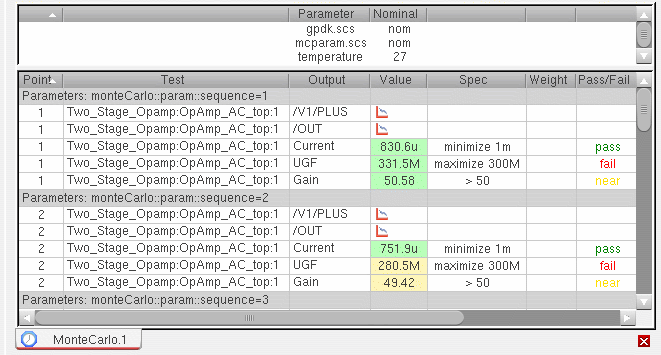
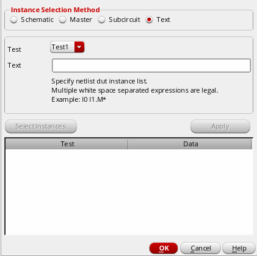

8
Performing Monte Carlo Analysis
You can use Monte Carlo (statistical) analysis to estimate parametric yields and generate information about the performance characteristics of the circuits you design.
The manufacturing variations in components affect the production yield of any design that includes them. Statistical analysis allows you to study this relationship in detail.
To prepare for a statistical analysis, your design must include devices with statistical models. Device parameters are modeled with statistical distributions which represent the variation of the fabrication process. Multiple simulations are performed during Monte Carlo analysis while randomly sampling from the statistical model distributions. Each sample point is simulated with different statistical parameter values based on the model distributions.
When the simulations finish, you can examine how the variation affects the overall yield of your design.
This chapter covers the following topics:
- Before Running a Monte Carlo Analysis
- Specifying Monte Carlo Run Options
- Specifying Instances for Monte Carlo Mismatch and Process Variation
- Running Advanced Methods
- Viewing Monte Carlo Results
- Managing Monte Carlo Results in the Yield View
- Generating Plots, Tables, Files, and Reports
- Viewing Statistical Parameters for Monte Carlo Samples
Before Running a Monte Carlo Analysis
- Spectre circuit simulator
- Virtuoso Accelerated Parallel simulator (APS)
-
Spectre AMS Designer and Xcelium Mixed-Signal simulator with Spectre or APS as the solver
To select a solver, in the Setup pane, right-click the test name and choose High-Performance Simulation. Select a solver in the High-Performance Simulation Options form.
Note the following:- Ensure that you are using the Cadence IUS 9.2 or later version of Spectre AMS Designer and Xcelium Mixed-Signal simulator.
- You cannot use Spectre AMS Designer and Xcelium Mixed-Signal simulator with UltraSim as the solver to run Monte Carlo analysis.
- Running Monte Carlo simulation in interactive mode (using SimVision) is not supported with the AMS Designer simulator.
Your design must include devices or device models for which you have specified statistically varying parameter values. You must specify either global (process) or mismatch (per-instance) variations or both. You can also specify correlation information by specifying correlation constraints in Constraint Manager. After simulating, you can select the Yield view to view mean and standard deviation information.
Before you proceed with the Monte Carlo run, ensure the following:
- The simulator specified is Spectre, APS, or AMS Designer (with Spectre as the solver). You can run Monte Carlo analysis only with these simulators.
- Disabled output expressions—expressions for which the Plot check box is not selected in the Outputs Setup tab—will not be evaluated for Monte Carlo simulations. Therefore, ensure that the Plot check box is selected for the output expressions that you want to be evaluated.
-
(Optional) If you have corners defined, you can also select the Corners check box on the Explorer Run Summary assistant or Setup assistant to run Monte Carlo over them.
-
(Optional) If you do not want to include the nominal corner in the Monte Carlo analysis, you can deselect the Nominal Corner check box on the Run Summary pane.
Specifying Monte Carlo Run Options
To specify Monte Carlo run options, do one of the following:
- Choose Tools – Monte Carlo.
-
In the Setup assistant, in the Monte Carlo Sampling section, click the
Click to Open Setup Formtext.
The Monte Carlo form appears as shown in the figure below. This form includes two sections, Guided Mode and Advanced – Show All Options.
With ADE Explorer license, the Standard Monte Carlo run is performed by default. If you have the Virtuoso Variation Option (VVO) license available, you can also run Monte Carlo using the advanced statistical analysis methods—Sensitivity Accuracy,Mismatch Contribution,Yield Verification – Reorder Samples,Scaled-Sigma Sampling, Worst Case Distance,KSigma Corners,Worst Samples, andConfidence Interval - Autostop. When running these advanced methods in ADE Explorer, the VVO license is checked out along with the ADE Explorer license. When you do not have the VVO license, you can run only Standard Monte Carlo andYield Verification - Autostopmethods with the ADE Explorer license.
This section includes the following topics:
- Performing a Standard Monte Carlo Run
- Performing Sensitivity Accuracy
- Performing Yield Verification
- High Yield Methods
- Creating Statistical Corners
- Creating Statistical Corners
- Running Confidence Interval - Autostop Method
Performing a Standard Monte Carlo Run
In Standard Monte Carlo, a specific number of points are simulated.
To perform a standard Monte Carlo run, perform the following steps in the Monte Carlo form.
- In the Guided Mode section, select the Run a fixed number of points option. This option is selected by default on the Monte Carlo form.
-
In the text field, specify the number of points to be run. The default number of points is
200. -
When you expand the Advanced - Show All Options button, the additional form fields appear as shown in the figure below:
-
In the Variation field, select one of the statistical variation options:You must define your models so that they respond to the statistical variations you choose. In addition, specify the file containing your models on the Model Library Setup form. For a Spectre circuit simulator example of how to define your models, see “Specifying Parameter Distributions Using Statistics Blocks” in the Spectre Circuit Simulator User Guide.
- The Number of Points field shows the fixed number of points you specify in the Guided Mode section.
- The Target Yield shows the target yield and sigma value. This field is disabled when you perform a standard Monte Carlo run.
-
In the Method drop-down, select the method you want to use to run Monte Carlo sampling. The default method is
Standard Monte Carlo Sampling. The other available methods are:-
Sensitivity Accuracy—For more information, see Performing Sensitivity Accuracy. -
Yield Verification - Autostop—For more information, see Performing Yield Verification. -
Yield Verification - Reorder Samples—For more information, see Performing Yield Verification. -
K-Sigma Corners—For more information, see Creating Statistical Corners. -
Worst Samples—For more information, see Creating Statistical Corners -
ConfidenceInterval—For more information, see Running Confidence Interval - Autostop Method
-
-
Select the Save Waveforms (Simulation Data) option if you want to save output data (
psf) for every Monte Carlo iteration so that you can perform post-processing operations (like plotting, printing, annotation, and re-evaluation) on individual iterations. Histograms are always available for plotting even if this option is not selected. It is suggested not to select this option if you do not want to plot waveforms as it helps in saving disk space.
If you do not select this check box: -
Select the Save Statistical Parameter Data option if you want to save statistical parameter information in the
maestroview database. This option enables the post-processing of Monte Carlo results. For example, for mismatch contribution analysis, creation of statistical corners requires saved statistical parameter data. -
In the Sampling Method drop-down, select one of the following statistical sampling methods to be used:
-
Random: The Random sampling method takes the Brute Force approach of sequentially calling a random number generator without considering the samples generated previously. There is no sample selection or rejection. It has a convergence accuracy of 1/sqrt(N). -
Latin Hypercube: Latin Hypercube is a quasi-random sampling algorithm with sample selection and rejection. The sample space is evenly divided into probable subspaces. All sample points are then chosen simultaneously making sure that the total ensemble of sample points is a Latin Hypercube sample and that each subspace is sampled with the same density. The Latin Hypercube algorithm has a convergence accuracy of 1/pow(N,2/3). -
Low-Discrepancy Sequence: Low-Discrepancy Sequence (LDS) uses a deterministic sequence to get a uniform coverage of the sampling space, which makes it better than theRandomsampling method. In addition,LDSuses auto stop features to generate samples, which is not supported byLatin HypercubeSampling (LHS). The convergence speed forLDSis faster than theRandomsampling method and is comparable to theLHSmethod. Therefore, overall, this method is better than both,RandomandLHS.
When the selected methods areRandomandLow-Discrepancy Sequence, specify the following form fields:
-
In the Seed field, specify a seed for the Monte Carlo analysis. By always specifying the same seed, you can reproduce a previous experiment. If you do not specify a seed, the value
12345is used. -
In the First Point field, specify a starting run number. The first point specifies the run that Monte Carlo begins with. By specifying this number, you can reproduce a particular run or sequence of runs from a previous experiment (for example, to examine an earlier case in more detail).
To reproduce a run or sequence of runs, you need to specify the same value in the Starting Run Number and the Monte Carlo Seed fields.
When the selected sampling method isLatin Hypercube, specify the number of bins (subdivisions) in the Number of Bins field.
-
-
In the Netlist Options field, specify additional analysis options that you want to generate in the netlist.
For example, "nullmfactorcorrelation=yes". - Click the Specify Instances/Devices (Not Specified) button to specify the sensitive instances and devices you want to either include or exclude for applying mismatch variations. For more information, see Specifying Instances for Monte Carlo Mismatch and Process Variation.
-
Click OK.
Now, click the run button to run the standard Monte Carlo sampling.
ADE Explorer calculates the number of simulations to be run. If the number exceeds the threshold limit specified using thewarnWhenSimsExceedenvironment variable, a warning message is displayed to confirm if the run is to be continued.
When the run is in progress, Monte Carlo displays the details of the run in a log window, as shown below.
After the run is complete, ADE Explorer displays the results in theYieldview on the Results tab. Results are reported for each test, corner and measurement expression and the total yield is reported for the circuit. For more details, refer to Viewing Monte Carlo Results.You can change the default results view for the Monte Carlo Sampling run mode using the defaultResultsViewForMonteCarlo environment variable.You can also use the Summary view or the Detail view on the Results tab to view the detailed results for the Monte Carlo analysis. In the Summary view and Detail view, the results for each Monte Carlo sample is displayed under a row namedParameters: monteCarlo::param::sequence=n
where n is the number of the sample. For example, in the following figure of the Detail view, the results under the rowParameters: monteCarlo::param::sequence=1 displays the results for the first sample.
The program converts waveforms that haveThe program also displays a pass/fail type of histogram plot for the results. For more information about plotting histograms for Monte Carlo results, see Plotting Histograms.mcparamsetas the sweep name to histograms and plots each such waveform in a separate subwindow.
Running Monte Carlo with Sweep Values
If you have sweep values specified for design variables or parameters in the ADE Explorer setup, you can run Monte Carlo only using the Standard Monte Carlo method. If you run Monte Carlo using any other advanced method with sweep values enabled, a pop-up error message is displayed.
Consider the example below in which you have specified sweep values for design variable, cload=100f 200f. The method selected in the Monte Carlo options is Standard Monte Carlo. Now, when you run the simulation, the results for both sweep values appear on the Results tab, as shown in the figure below.
The yield results view contain separate rows for each swept variable or parameter. The overall yield is also displayed at the top.
Performing Sensitivity Accuracy
This method is used to post-process the Monte Carlo results and view the Mismatch Contribution table when you are not sure about the number of samples required to view the mismatch contribution results. This method helps in automatically determining the number of samples required to be run to meet the target accuracy level so that post-processing for mismatch contribution analysis can be done. The number of samples depends on the design and the number of statistical parameters defined by the model files.
When you choose this method, the Monte Carlo run is stopped as soon as a model for variation contribution can be built for every output.
To run sensitivity accuracy method, ensure that Run a fixed number of points field is selected in the Guided Mode section of the Monte Carlo form.
-
In the Advanced - Show All Options section, in the Method drop-down, select the
Sensitivity Accuracymethod.
The figure below shows the form fields that appear when theSensitivity Accuracymethod is selected.
Specify the following field values:
-
In the Variation drop-down, select variation as
Mismatch. -
In the Max Points field, specify the maximum number of points to be run. By default, this field is set to
1000. -
Select the Save Waveform (Simulation Data) if you want to save the waveform data (
psffiles) for plotting. -
In the Sampling Method drop-down, select the method as
RandomorLow-Discrepancy Sequence. TheLatin Hypercubesampling method is not available with Sensitivity Accuracy method.
For more information about these form fields on this form, see Performing a Standard Monte Carlo Run.
Viewing Sensitivity Results
You can view the sensitivity results to find out the sensitivity of specifications to variables, device parameters, statistical parameters and DC operating point parameters.
-
Click the Sensitivity Results button
on the toolbar in the Results tab.
In the Sensitivity Analysis window is displayed. In this window, the sensitivity data is displayed in a tabular format, where each data cell shows the sensitivity of a spec or parameter in the corresponding column to the spec or parameter displayed in the corresponding row. The specs or parameters displayed in the inputs and outputs depend on the selected tab.
For more information, see Sensitivity Analysis chapter in Virtuoso ADE Assembler User Guide.
Viewing Mismatch Contribution Results
You can view the important contributors to mismatch variation by using the Mismatch Contribution post-processing command on the Monte Carlo results. It is recommended to choose the Sensitivity Accuracy method to automatically determine the number of required samples. After you run these required Monte Carlo samples, the Mismatch Contribution tab is visible. This tab is also visible when you manually specify the number of points instead of selecting the Sensitivity Accuracy method.
To view mismatch contribution results:
-
Click Mismatch Contribution button
on the toolbar in the Results tab.
The Sensitivity Analysis window is displayed showing the Mismatch Contribution tab.
For more information, see Mismatch Contribution Analysis in Virtuoso Variation Option User Guide.
Performing Yield Verification
The accuracy of the yield estimate from a Monte Carlo run increases by simulating a large number of samples. However, running a large number of simulations can consume a lot of time and resources if a design is large. You can perform one of the following yield verification methods to estimate the yield during the Monte Carlo analysis. These methods can be run when the target yield less than 4 sigma.
-
Yield Verification - Autostop
This method is used to automatically identify the appropriate number of samples for Monte Carlo analysis to simulate based on a target yield estimate. The Monte Carlo run will stop automatically without running additional simulations as soon as it can be determined that the yield is above or below the target. -
Yield Verification - Reorder Samples
To verify the yield, you require a large number of samples when the yield is above or slightly below the target. For example, when verifying a 3-sigma target with confidence value 90 percent, the run can be stopped if the first 1800 samples (approximately) pass the specification. The sample reordering method helps you verify the yield without simulating such a large number of samples.
To perform yield verification using the Yield Verification - Autostop or Yield Verification - Reorder Samples methods,
-
In the Guided Mode, select the Verify the yield (sign-off) option.
When you select this option, the What is the Yield requirement? field appears in which you specify the sigma or percentage value. If you choosesigma, the default value is3and if you choose%, the default value is99.865. The value you specify in this field is always in synchronization with the Target Yield field available in the Advanced - Show All Options section.These yield estimation methods are used only when the sigma value is less than4. For higher sigma values (<4), you can use scaled-sigma sampling or worst case distance methods.
-
When the yield is
3, in the Advanced - Show All Options section, specify the following fields:
-
In the Variation drop-down, select variation as
All,Mismatch, orProcess. -
In the Max Points field, specify the maximum number of points to be run. By default, this field is set to
2289for probability set to95%. The value of this field changes when you change the probability value. - In the Target Yield field, specify the yield value that you want to achieve for your design. The value of this field is same as the sigma field in the Guided Mode section.
-
In the Probability field, select a probability percentage value. Probability values closer to 100% will require more simulations before the yield estimate can be determined to be lower or higher than the target. Smaller probability values requires less simulations before auto stop is triggered. The default value is
95%.
-
In the Variation drop-down, select variation as
-
In the Method drop-down, select the method as
Yield Verification - Basic AutostoporYield Verification - Sample Reorder.If you have the Virtuoso Variation Option license available,Yield Verification - Sample Reordermethod is selected by default when you select the Verify the Yield Sign-off option in Guided Mode.If you have the Virtuoso Variation Option License available, by default when you select the Verify the Yield Sign-off option in Guided Mode,Yield Verification - Sample Reordermethod is selected. For more information about how to run this method, see Running the Yield Verification - Reorder Sample Method in Virtuoso Variation Option User Guide. -
Select the Save Waveforms (Simulation Data) option if you want to save output data (
psffiles) for every Monte Carlo iteration so that you can perform post-processing operations (like plotting, printing, annotation, and re-evaluation) on individual iterations. Histograms are always available for plotting even if this option is not selected. It is suggested not to select this option if you do not want to plot waveforms as it helps in saving memory.
If you do not select this check box: -
Select the Save Statistical Parameter Data option if you want to save statistical parameter information in the ADE Explorer results database. This option enables the post-processing of Monte Carlo results. For example, mismatch contribution analysis, creation of statistical corners require saved statistical parameter data.
-
In the Sampling Method drop-down, select one of the following statistical sampling method to be used:
-
Random: This sampling method takes the Brute Force approach of sequentially calling a random number generator without considering the samples generated previously. There is no sample selection or rejection. It has a convergence accuracy of 1/sqrt(N). -
Low-Discrepancy Sequence: Low-Discrepancy Sequence (LDS) uses a deterministic sequence to get a uniform coverage of the sampling space, which makes it better than theRandomsampling method. In addition,LDSuses auto stop features to generate samples, which is not supported byLatin HypercubeSampling (LHS). The convergence speed forLDSis faster than theRandomsampling method and is comparable to theLHSmethod. Therefore, overall, this method is better than both,RandomandLHS.
For more information about these methods, see Performing a Standard Monte Carlo Run.
-
-
In the Seed field, specify a seed for the Monte Carlo analysis. By always specifying the same seed, you can reproduce a previous experiment. If you do not specify a seed, the value
12345is used. -
In the First Point field, specify a starting run number. The first point specifies the run that Monte Carlo begins with. By specifying this number, you can reproduce a particular run or sequence of runs from a previous experiment (for example, to examine an earlier case in more detail).
To reproduce a run or sequence of runs, you need to specify the same value in the Starting Run Number and the Monte Carlo Seed fields. -
In the Netlist Options field, specify additional analysis options that you want to generate in the netlist.
For example, "nullmfactorcorrelation=yes". - Click the Specify Instances/Devices (Not Specified) button to specify the sensitive instances and devices you want to either include or exclude for applying mismatch variations. For more information, see Specifying Instances for Monte Carlo Mismatch and Process Variation.
- Click OK.
High Yield Methods
While verifying the yield, when you specify a target yield greater than 4 sigma in the Monte Carlo form, the method in Advanced - Show All Options section is automatically changed to Scaled-Sigma Sampling. In addition, for high target yield values, the Worst Case Distance method is also available that you can select in the Method drop-down. For more information about these high yield estimation methods see the below sections:
Scaled-Sigma Sampling
This method is selected by default when the yield is greater than 3 sigma. The Scaled-Sigma Sampling method generates samples where the standard deviation has been scaled up. As a result, a larger number of samples fall into the failure region of the distorted distribution. The failure rate is then estimated from the scaled samples.
The figure below shows the form fields that appear when you select this method:
For detailed information about the common form-fields, see Performing a Standard Monte Carlo Run.
Note the following additional field values available for the Scaled-Sigma Sampling method:
-
In the Number of Points field, specify the number of points you want to run. This field is set to
7000by default. - Select the Create Statistical Corners check box if you want to create statistical corners. When this option is selected, the task selection in the Guided Mode is changed to Create statistical corners.
-
The Sampling Method drop-down lists the following three methods:
Low-Discrepancy Sequence(default),Latin Hypercube, andRandom. - Click OK.
For more information, see
Worst Case Distance
When the target yield sigma value is greater than 4, you can also select the Worst Case Distance method to verify the yield of the design. In this method, the high yield estimation finds the shortest distance, referred to as Worst Case Distance or WCD, from the nominal point to the specification boundary in the process/mismatch parameter space. For detailed information about this method, see
The figure below shows the form-fields that appear when the Worst Case Distance is selected in the Method drop-down.

For information about the common fields, see Performing a Standard Monte Carlo Run.
Note the following additional field values available for this method:
-
The Number of Points field is by default set to
200. This field is disabled when the Automatic Number of Monte Carlo Points check box is selected. - Select the Create Statistical Corners check box if you want to create statistical corners. When this option is selected, the task selection in the Guided Mode is changed to Create statistical corners.
-
The Sampling Method drop-down lists the following three methods:
Low-Discrepancy Sequence(default),Latin Hypercube, andRandom. -
In the Worst Case Distance Options section, specify the following fields:
- The Use Monte Carlo History option is enabled if you have already run a Monte Carlo simulation, you can use the process and mismatch data from the history of that run. In this drop-down list, you can select a reference Monte Carlo run history from the list of available histories. It is essential that the simulation data of the selected history contains the process and mismatch data. If any one of these data is not available, an error message is displayed.
- The Automatic Number of Monte Carlo Points check box is selected by default. This is used to enable the automatic selection of number of Monte Carlo points. When you select this check box, the Number of Points and Automatic Variable Reduction fields become unavailable. To manually provide the number of Monte Carlo points to be simulated, disable this check box.
- By default, the Automatic Variable Reduction check box is disabled. To enable this check box, deselect the Automatically Select Number of Monte Carlo Points check box. The Automatic Variable Reduction option reduces the set of statistical variables by eliminating insignificant variables (variables that have no variation or have no influence on the WCD point). Insignificant variables bring noise and require more simulations for sensitivity analysis. Therefore, it is recommended to enable variable reduction.
-
To ignore the specifications for which Monte Carlo yield is less than a specified percentage, select the Skip Specs With MC Yield < check box and specify a sigma value. The default value of this field is
3sigma; therefore, specifications for which the Monte Carlo yield is less than 99.86% are ignored. If you want to run high yield estimation on all the specifications, disable the Skip Specs With MC Yield < check box. -
In the Max Number of Iterations field, specify the maximum number of iterations to be run for each specification. The default number of iterations is
10.
- Click OK.
For information, see
Creating Statistical Corners
For target yield values greater than 3, you can create statistical corners using the high yield estimation methods, Scaled-Sigma Sampling and Worst Case Distance. When the target yield is 3, the advanced methods can be used to create statistical corners.
This section includes the following topics:
- Using K-Sigma Corners Method
- Using Worst Samples Method
- Creating Statistical Corners using High Yield Methods
- Creating Statistical Corners from Existing Run History
To create statistical corners,
-
In the Guided Mode section, select the Create Statistical Corners check box and specify a target yield value.
When you select target yield less than4, you need to specify your requirements—whether you want speed or accuracy. Select one of the below listed options:-
Fast statistical Corner creation (~200 points for 3-sigma)—Select this option if you prefer speed over accuracy. When you select this option, the K-Sigma Corners method is performed to create statistical corners and the
K-Sigma Cornersmethod is selected in the Method drop-down. The K-Sigma Corners is strongly recommended over the Worst Samples method when the number of statistical parameters is large (> 1000).
For information about how to use this method, see Using K-Sigma Corners Method. -
Highest accuracy-no hard constraint on number of sims—Select this option if you prefer accuracy over speed. When you select this option, the Worst Samples method is performed to create statistical corners and the
Worst Samplesmethod is selected in the Method drop-down.
For information about how to use this method, see Using Worst Samples Method.
-
Fast statistical Corner creation (~200 points for 3-sigma)—Select this option if you prefer speed over accuracy. When you select this option, the K-Sigma Corners method is performed to create statistical corners and the
Using K-Sigma Corners Method
This method creates the K-sigma statistical corner that meets the specified target yield value and applies the stopping criteria according to which the Monte Carlo simulation is stopped when the K-sigma statistical corner has been created for each specification. It is possible that multiple corners meet the target specification criteria. Therefore, the K-sigma method finds the most representative corner by calculating the minimum distance to the nominal point. This representative corner has a greater probability to occur. The statistical corner can then be used for further analysis of the design. For more information, see
When you select the Fast statistical Corner creation (~200 points for 3-sigma) option, the K-Sigma corner method is performed. The figure below shows the form fields for this method:
For information about the common fields, see Performing a Standard Monte Carlo Run.
Note the following additional field values available for the K-Sigma Corners method:
-
The maximum number of points (samples) to be simulated are displayed in the Max Points field. This value is automatically set to
200for this method. -
The Sampling Method drop-down lists the following three methods:
Low-Discrepancy Sequence(default),Latin Hypercube, andRandom. - Click OK.
Using Worst Samples Method
The Worst Samples method is recommended when high accuracy is needed and the number of statistical parameters is not large (< 1000).
In this method, the points are reordered based on the response surface modeling and sampling is stopped when the worst sample is found for each specification. The statistical corners are automatically created from the worst samples. For more information, see
When you select the Highest accuracy-no hard constraint on number of sims option, the Worst Samples method is used to create statistical corners. The figure below shows the form fields for this method:
For information about the common fields, see Performing a Standard Monte Carlo Run.
Note the following additional field values available for the Worst Samples method:
-
The maximum number of points (samples) to be simulated are displayed in the Max Points field and automatically set to
2289when the probability is95%. This value changes when you change the probability. -
In the Probability field, specify the probability value (confidence level). The default probability is
95%. -
The Sampling Method drop-down lists the following three methods:
Low-Discrepancy Sequence(default),Latin Hypercube, andRandom.
For information about how to create statistical corner using the advanced methods, see
Creating Statistical Corners using High Yield Methods
While verifying the yield, when you specify a target yield greater than 3 sigma in the Monte Carlo form, the method in Advanced - Show All Options section is automatically changed to Scaled-Sigma Sampling. In addition, for high target yield values, the Worst Case Distance method is also available that you can select in the Method drop-down. For more information about these high yield estimation methods see the below sections:
Creating Statistical Corners from Existing Run History
After running Monte Carlo simulations, you can analyze the yield and identify the specifications for which the results need improvement. You can then create statistical corners to be used in further analysis and design optimization.
To create statistical corners from the Monte Carlo results, right-click the specification row in the Results tab and choose one of the methods shown in the figure below.
-
Creating Statistical Corner from Worst Sample
This method identifies a sample that generated the worst result for a specification and creates a statistical corner using the sample details. -
Creating Statistical Corner (Specified in Sigma)
This is a fast method to create 3-sigma or user-specified sigma statistical corners without requiring a large number of Monte Carlo samples. -
Creating Statistical Corner from Percentile
This method is used to create a corner for the nth worst percentile for a given specification.
For more information about these methods, see
Running Confidence Interval - Autostop Method
The Confidence Interval - Autostop method automatically stops Monte Carlo run when the confidence interval for the output standard deviation divided by the output value range falls below the Stop Percentage value. The default Stop Percentage value is 5%.
In this method, you need not define number of sample points to run, target yield value, and specification targets because Monte Carlo run stops automatically when the stopping criteria is met, where stopping criteria is defined as follows:
To select this method, open the Monte Carlo form, and then choose Confidence Interval - Autostop from the Method drop-down list in the Advanced - Show All Options section.
For more information about this method, see
Specifying Instances for Monte Carlo Mismatch and Process Variation
By default, mismatch variations are applied to all subcircuit instances in the design. You can use the Specify Instances for Mismatch form to do one of the following:
- Select specific instances to which the variation must be applied. The variation will also be applied to all subcircuits instantiated under the selected instances.
- Select specific instances to the which variation must not be applied. The variation will not be applied to any subcircuit instantiated under the selected instances.
To include or exclude specific instances and devices for applying mismatch variations, do the following:
-
Click the Specify Instances/Devices button on the Monte Carlo form.If the button name appears as Specify Instances/Devices (Not Specified), it indicates that no instances or devices are selected. Therefore, mismatch variations are applied to all subcircuit instances in the design. If the button name appears as Specify Instances/Devices (Exists), it indicates that you have selected specific instances and devices to include or exclude for applying mismatch variations.The Specify Instances for Monte Carlo form appears.
-
In the Variation Applied to Selected/Unselected Instances group box, specify the following drop-down options:
-
Do one of the following:
Select To Select the instances you want to include or exclude for applying mismatch variations in the schematic.
For more information, see Selecting Schematic Instances for Applying Mismatch Variations.
Select instances of cellviews you want to include or exclude for applying mismatch variations. All the instances within the selected cellviews will be included or excluded.
For more information, see Selecting Instances of Cellviews for Applying Mismatch Variations.
Select the subcircuit instances you want to include or exclude for applying mismatch variations. All the instances within the selected subcircuits will be included or excluded.
For more information, see Selecting Subcircuit Instances for Applying Mismatch Variations.
- Click OK to save the changes and return to the Monte Carlo options form.
Selecting Schematic Instances for Applying Mismatch Variations
To select instances you want to include or exclude for applying mismatch variations in the schematic, do the following:
-
Select the Schematic option.
The test name is displayed in the Test drop-down list. - Click the Select Instances button. The schematic for the test is opened in a new tab.
-
In the schematic, select one or more instances. To select more than one instance at a time, do one of the following:
- Hold down the Shift key and click instances.
-
Click and drag the mouse over the instances you want to select.
All the instances that are within the yellow bounding box that appears are included in the selection.
In the following example, instancesI1andI3that are within the yellow bounding box are included in the selection.
-
Press the Esc key when you are done.
The selected instances are displayed in the Choices field and are simultaneously listed in the summary table at the bottom of the form. -
In the Choices field, select the instances you want to include or exclude for applying mismatch variations.
To select multiple instances, hold down the Shift key (for contiguous selection) or the Ctrl key (for noncontiguous selection) and click the next instance to add it to the selection set.
The instances listed in the Choices field are cross-linked with the schematic. When you click an instance name in Choices, it will be highlighted in the schematic and vice-versa. -
Click Apply.
The selected instances are added for the test. For example, in the following figure shows the instance /I9added for the given test.
Selecting Instances of Cellviews for Applying Mismatch Variations
To select instances of cellviews you want to include or exclude for applying mismatch variations, do the following:
-
Select the Master option.
The Test drop-down list displays the test name opened in the ADE Explorer setup. -
Use the Library, Cell and View drop-down lists to select the library, cell and view in which the cellview exists.
All the instances of the cellview in the design for the test are displayed in the Choices field.
Note the following:-
You can set the
ignoredLibsForDUTenvironment variable in your.cdsenvfile to specify the libraries that should not be displayed in the Library drop-down list. -
You can add only instances of cellviews that exist in the design. If instances of a cellview do not exist in the design, the View field displays the text No View indicating that you cannot select instances of the cellview.
For example, in the following figure, the View field displays the text No View because none of the cellviews of theinvdelayTest_Lib4cell in themyLiblibrary are instantiated in the design for the given test.
-
You can set the
-
In the Choices field, select the cellview instances you want to include or exclude for applying mismatch variations.
To select multiple instances, hold down the Shift key (for contiguous selection) or the Ctrl key (for noncontiguous selection) and click the next instance to add it to the selection set. -
Click Apply.
The selected cellview instances are added for the test. For example, the following figure shows that the cellview instance/I24has been added for the given test.
By default, the Type and Sch/Master/Subcircuit columns are not visible. To view these columns, right-click the title bar and select the name of the column to be displayed in this table.
Selecting Subcircuit Instances for Applying Mismatch Variations
To select the subcircuit instances you want to include or exclude for applying mismatch variations, do the following:
-
Select the Subcircuit option.
The test name is displayed in the Test drop-down list. -
In the Subcircuit drop-down list, choose the subcircuit whose instances you want to select.
All the instances of the subcircuit in the design are displayed in the Choices field. -
In the Choices field, select the subcircuit instances you want to include or exclude for applying mismatch variations.
To select multiple instances, hold down the Shift key (for contiguous selection) or the Ctrl key (for noncontiguous selection) and click the next instance to add it to the selection set. -
Click Apply.
The selected instances are added for the test. For example, the following figure shows that the instance/I15has been added for the given test.
Manually Specifying the Instances for Applying Mismatch Variations
To manually specify the instances you want to include or exclude for applying mismatch variations, do the following:
-
Select the Text option.
 - In the Test drop-down list, choose the test name.
-
In the Text field, enter the names of the instances you want to select. For example,
"I0.I1 I0.I2".
You can also use wildcard matching to specify the instances. For example,"I0.I1.M8 I0.I2.M* I0.I4". -
Click Apply.
The instance selection is added to the test. For example, in the following figure,"I0.I1 I0.I2"and"I0.I1.M8 I0.I2.M* I0.I4"are added for theTRANandACtests. For the wildcard entry,I0.I2.M*, the simulator will consider all the instances prefixed with "M" underI0.I2.
Modifying an Existing List of Selected Instances
To modify a list of instances that are already selected for mismatch, do the following:
- Select a row from the table at the bottom of the Specify Instances for Mismatch form.
-
Modify the list of selected instances in the Choices field.
To select multiple instances, hold down the Shift key (for contiguous selection) or the Ctrl key (for noncontiguous selection) and click the next instance to add it to the selection set. - Click Apply.
Deleting Instances Selected for Applying Mismatch Variations
You can delete the selected instances in two ways:
-
From the Choices list:
-
Right-click the instance and choose Delete.
-
To delete multiple instances, hold down the Shift key (for contiguous selection) or the Ctrl key (for noncontiguous selection), click the rows for the instances you want to delete, then right-click and choose Delete.
To undo a delete action, use the Undo Delete right-click option.
-
Right-click the instance and choose Delete.
-
From the summary table:
To delete an instance, do the following:-
Right-click the row for the instance and choose Delete.
- To delete multiple instances, hold down the Shift key (for contiguous selection) or the Ctrl key (for noncontiguous selection), click the rows for the instances you want to delete, then right-click and choose Delete.
To delete all instances, do the following: -
Right-click the row for the instance and choose Delete.
Running Advanced Methods
When you run a standard Monte Carlo, a single Monte Carlo run history is created and saved in the ExplorerRun.0 file, which is the default history file used to view saved results in ADE Explorer.
When you have VVO license available, you can run yield verification or other advanced methods using ADE Explorer. For all these methods, the group run history is created and the child histories are saved within the ExplorerRun.0 file. In addition, the progress bar at the bottom of the ADE Explorer window shows the information and status of each child history run.
To view the child histories, choose Results – Select. The Select History to View Results form appears that lists the histories of all the intermediate child runs.
Consider the following example in which you run Yield Verification - Reorder Samples method. The Monte Carlo setup has Task selected as Verify Yield, Sigma as 3.0, and Method as Reorder Samples.
When you run the Monte Carlo simulation, a log file appears that displays information about the tasks performed by the tool during the run.
The below steps explain the different intermediate tasks that are performed while the simulation is running:
-
The run begins with an initial Monte Carlo sampling, in which a small number of samples are simulated in the normal order (a minimum of 50 samples) to build the response surface model for each specification. The Sensitivity Accuracy method is applied that stops simulating new Monte Carlo samples after enough data is available for accurate modeling. The tool calculates the number of statistical parameters and also the maximum number of points needed to get the model accuracy. However, the number of samples are identified based on the design and outputs, and can be less than the calculated value.

-
After the initial sampling and modeling is complete, the remaining samples are generated but not simulated. The total number of samples required for the run is determined automatically from the target yield and the probability requirements specified in the Monte Carlo form. For each of the remaining samples, the statistical parameter values are generated and the samples are ordered using failure probability modeling. This history of this run is saved in the
ExplorerRun.0InitialSamplingfile.
The statistical parameters values are extracted for all samples in theExplorerRun.0.ParameterDumpfile. The progress bar in figure below shows the status of parameter extraction and dumping.
-
Now, the Monte Carlo samples are simulated in the highest probability to fail order. The Monte Carlo run stops automatically in both cases—target yield is met or not met.
- When the yield is low, the failed samples are simulated first.
- When the yield is high, the run stops early when the specifications pass for the samples with high probability to fail. The remaining samples have low probability to fail.
If the design has low yield, the failed samples are identified early and the simulation run is stopped. On the other hand, if the design has high yield, it can be determined earlier that the yield target is met if the most probable to fail samples pass the specification. If these worst samples pass the specifications, the run stops early.
In both the cases, the run stops earlier than the traditional significance test method using a normal random sequence of samples. Significant time saving is observed in high yield cases, since the worst case samples are simulated much earlier in the run.
Now, to view the result histories of this simulation run, choose Results – Select. The Select History to View Results form appears, as shown in the figure below.
After the run is complete, as a post-processing step, you can also create statistical corners for a specification from the generated results. To do this, right-click a result value and choose Create Statistical Corner from Worst Sample or Create Statistical Corner from Percentile.
For example, for the above Monte Carlo setup (Yield Verification - Reorder Samples method), when you create the statistical corner for Voffset using Worst Samples, the Stat_seq_987_params_Voffset corner is created as shown in the figure below.
Viewing Monte Carlo Results
The default results view for the Monte Carlo Sampling run mode is the Yield view. This view displays the overall yield estimate based on the pass or fail status of all the specifications. You can also configure the values that you display in the Monte Carlo results in the Yield view.
To do this, select the options in the Configure what is shown in the table drop-down list available on the Results toolbar, as shown in the figure below:
- Managing Monte Carlo Results in the Yield View
- Plot/Print versus Iteration
- Plotting Histograms
- Plotting Scatter Plots
Managing Monte Carlo Results in the Yield View
The following topics explain how you can manage the Monte Carlo results either to show the most relevant data:
- Expanding and Collapsing Output Data
- Viewing Data for a Specific Confidence Interval
- Filtering Out Data from the Yield View
- Filtering Out Data from the Yield View
Expanding and Collapsing Output Data
After a Monte Carlo analysis run is complete, you can view the outputs for all tests in an expanded or collapsed form in the Yield view on the Results tab of the Outputs Setup pane.
To change the view of the outputs of your ADE Explorer tests on the Results tab, right-click a testbench and choose the following from the context-sensitive menu:
- Expand Outputs to expand the outputs for a specific test
- Collapse Outputs to collapse the outputs for a specific test
- Expand Outputs All Tests to expand the outputs for all tests
- Collapse Outputs All Tests to collapse the outputs for all tests
The following figure illustrates the collapsed outputs for a test in the Yield view on the Results tab:
The Yield view displays the number of output rows number specified in the yieldViewMaxOutputsShowExpanded environment variable in expanded form, but when the number of output rows exceeds this limit, the output rows are collapsed by default and you can expand the required rows.
Viewing Data for a Specific Confidence Interval
During or after a Monte Carlo analysis run, you can specify a confidence level to display the confidence intervals for the estimated yield, mean, and sigma.
To set the confidence level, right-click the gray-colored row at the top and choose Set Confidence Level. The Set Confidence Level form is displayed, as shown in the following figure.
Specify a percentage value in the One-sided Confidence Level field and click OK.
ADE Explorer displays the confidence intervals for the yield, mean, and sigma values, as shown in the following figure.
Figure 8-1 Yield View Displaying Confidence Intervals
0 in the One-sided Confidence Level field.Filtering Out Data from the Yield View
By default, the statistical calculations displayed in the Yield view are based on all the points in Monte Carlo results. However, you can filter out and eliminate the points that were either partially complete or they resulted in simulation or evaluation errors so that the yield estimate is calculated only on the points for which simulation was successfully completed.
To apply a filter in the Yield view, right-click the gray-colored row at the top and choose Filter Points from Yield Estimate.
Figure 8-2 The Context-Sensitive Menu of the title row

Alternatively, you can right-click the Errors column title in the Yield view and choose the type of filter to be applied.
The Filter Points from Yield Estimate form is displayed, as shown in the following figure.

Select a check box to filter the required type of errors and click OK.
ADE Explorer filters out the incomplete or error points from the Yield view. The yield values for specifications and the overall yield estimate are updated. The total number of points considered for yield estimate calculation are also reduced to eliminate the points that were filtered out, as shown in the example figures given below.
Figure 8-3 Yield View Before Applying the Error Filter
Figure 8-4 Yield View After Applying Error Filter
Important Points to Note
- The error filter only filters the results displayed in the Yield view and does not remove the results from the results database. At any time, you can remove the filter to view the results for all the points.
- If there are multiple tests, a point that is filtered from the output statistics of a particular test is also filtered out from the statistics of other tests.
Generating Plots, Tables, Files, and Reports
After a Monte Carlo run, you can generate plots, tables, files, and reports for your input and output parameters. See the following topics for more information:
- Plot/Print versus Iteration
- Printing Correlation Tables
- Plotting Histograms
- Plotting Scatter Plots
- Exporting Results to a CSV File
Plot/Print versus Iteration
To plot or print the values of outputs or parameters at the end of each iteration, do one of the following:
-
Click
 on the Results tab, select a test and choose Plot/Print Versus Iteration.
on the Results tab, select a test and choose Plot/Print Versus Iteration.
Alternatively, switch to the Yield view, right-click a test name and choose Plot/Print Versus Iteration.
The Plot/Print Versus Iteration form is displayed.
- From the drop-down list on the top-left corner of the form, select the type of results for which you want to plot or print values.
The default value is Outputs. When Outputs is selected, the field beneath this list box shows the names of all the outputs. In addition, the Overall Yield Estimate is also listed on top.
When you select Statistical Parameters from the Select from drop-down list, the names of all the parameters are displayed in the field beneath the list box.
- From the scroll list given below the Select from list, select the names of one or more output or parameters for which you want to print or plot the result values at the end of each iteration.
- In the What to plot/print section, select appropriate check boxes to specify the types of values to be plotted or printed.
You can choose to print only the result values or the calculated yield, mean or sigma values for each iteration.
You can sort by iteration number or by the result values. The printed results are sorted in the ascending order.
-
Select the Plot check box to plot the results.
You can also choose a plotting mode from the drop-down list given to the right. - Select the Print check box to print the results.
-
Click Apply to print or plot as per the specifications given on this form.
The iteration versus value table for the selected outputs or parameters are displayed in a Results Display Window, as shown below.
The plots of the selected options are displayed in the Virtuoso Visualization and Analysis XL window as shown below.
The plotted results are displayed in the Virtuoso Visualization and Analysis XL window. Incrementally displayed plots are shown in the same or new window or subwindow as per the specified plotting mode.
Important Points to Note
-
Only the yield value can be printed or plotted for the
Overall Yield Estimateoutput. You cannot print or plot mean or sigma value for this output type. - The Sort by field is applicable for printing and plotting of value, mean and sigma.
- You can use the Search field to search for a particular output or parameter name.
Printing Correlation Tables
To print a table showing the correlation coefficients of each parameter with each of the other parameters sorted from most correlated to least correlated for each combination of parameters, do one of the following:
-
Click
on the Results tab, select a test and choose Print Correlation.
Alternatively, switch to the Yield view, right-click a test name and choose Print Correlation
The Correlation Table form appears.
- In the Suppress Printout for Correlations Less Than field, type a minimum correlation value.
-
Click OK.
Pairs of parameters with correlation coefficients greater than the value you typed in the Suppress Printout for Correlations Less Than field appear in a table in a Results Display Window.
Each row lists the pair of measurements considered, the mean and standard deviation of the first measurement, the mean and standard deviation of the second measurement, and the number of data points included in the calculation.
Plotting Histograms
You can plot histograms for the outputs and statistical parameters from Monte Carlo results.
To plot histograms, do the following:
-
Click
on the Results tab, select a test and choose Histogram.
Alternatively, switch to the Yield view, right-click a test name and choose Histogram.
The Plot Histogram form appears.
By default,Outputsis selected from the drop-down list on the top-left corner of the form and a list of names of all the outputs (from the Outputs Setup tab) is also listed in the list given below that. -
Select one or more output names that you want to plot on the histogram.
Alternatively, you can choose to plot histograms for statistical parameters. For this, select Statistical Parameters from the drop-down list on the top-left corner of the form and select the names of one or more parameters from the list below it.
You can change the default value of this field by setting the histogramBins environment variable. You can also change the default maximum value for this field from 1000 by setting the maxHistogramBins environment variable.
- Select an appropriate histogram graph type from the Type drop-down list. You can select one of the following:
-
(Optional) Specify a plotting mode to specify how to plot graphs when a Virtuoso Visualization and Analysis XL window is already open. The default plotting mode is
Replace. -
(Optional) Select the types of annotations that you want to display on the histogram plots. You can select one of the following annotation types:
- Density Estimator: Plots a curve that estimates the distribution concentration.
- % Markers: Shows vertical marker lines in the histogram at percentages corresponding to 1, 2, and 3 standard deviations of a normal distribution. If the distribution of the output is normal, these lines will be at the same position as the sigma lines. You can display the marker lines to get an idea about the distribution of points.
- Std Dev Lines: Shows the standard deviation lines in the graph indicating the mean, mean – standard deviation, and mean + standard deviation values.
- Show Points: Shows points on the histogram.
- (Optional) Select the Normal Quantile Plots check box to plot the quantile plots (Q-Q plots).
- If you have selected multiple corners for a histogram, click Combine. For more details, refer to Plotting Combined Histograms.
-
Click OK.
The histogram plot appears in the Virtuoso Visualization and Analysis XL window, as shown below.
The standard deviation lines indicate how the data points are spread, far away or close to the mean values. The gap between each vertical line is equal to one standard deviation.
The example histogram given below shows how % markers are displayed.
The vertical marker lines are placed at percentages corresponding to 1, 2, and 3 standard deviations of a normal distribution. The following intervals are bound by vertical lines and labeled, where, a label between two marker lines displays the percentage of points that fall in the given range:
- 0.13% (-infinite to -3 sigma normal distribution)
- 2.14% (-3 sigma to -2 sigma normal distribution)
- 13.59% (-2 sigma to -1 sigma normal distribution)
- 34.13% (-1 sigma to mean normal distribution)
- 34.13% (mean to 1 sigma normal distribution)
- 13.59% (1 sigma to 2 sigma normal distribution)
- 2.14% (2 sigma to 3 sigma normal distribution)
- 0.13% (3 sigma to infinite normal distribution)
You can display the marker lines to get an idea about the distribution of points. If the distribution of the output is normal, these lines will be at the same position as the sigma lines.
Important Points to Note
-
The default histogram type is
pass/fail. You can choose a different plot type from the Type drop-down list on the Plot Histogram form. - The annotations displayed in the graph vary depending on the histogram type.
- If you select multiple outputs or parameters, each output or parameter is plotted in a separate subwindow.
- By default, the histogram bars are filled with a transparent or alpha color to make the data points clearly visible. You can click these points to cross-probe results on the Results tab. For more details, refer to Cross-Probing Results from Histogram Plots.
- When you choose to display the normal quantile plot, ADE Explorer plots the graphs in two subwindows, one shows the histogram and the other shows the normal quantile plot. For details on a normal quantile plot, refer to Normal Quantile Plots.
- If you observe a large variation in the results for a particular output, you can view the Mismatch Contribution table to identify the devices that are contributing to that variation. If required, you can modify such devices in your design and rerun Monte Carlo to verify that the variation is reduced. For details on the how to view data in the Mismatch Contribution table, refer to The Mismatch Contribution Table.
- You can set the histogram options using the Plotting/Printing Options form.
- You can set the default values for the histogram options using the following environment variables:
Plotting Combined Histograms
When the results of a Monte Carlo simulation contain outputs for multiple corners, you can plot a combined histogram for the outputs of more than one or all the corners. You can plot a combined histogram in any one of the following two ways:
-
On the Plot Histogram form, select the names of outputs for multiple corners and click Combine.
-
In the Yield view of the Monte Carlo results, press the
Ctrlkey and select the outputs for multiple corners. Right-click and choose Combine Histograms.
The Virtuoso Visualization and Analysis XL window is opened displaying a combined histogram for all the selected outputs as well as an individual histogram for each output.
By default, all the histograms are visible. However, you can use the visibility (Vis) marker in the graph legend to control the display of an individual histogram.
Important Points to Note
- A combined histogram shows the combined values for all the corners used to plot the histogram. For example, it shows the mean or standard deviation value calculated over all the included corners.
-
You can move a leaf out of a combined histogram into a new window, subwindow, or strip, as shown below.

- You can right-click the name of any output in the graph legend and click Delete to remove the histogram for that output. The combined histogram is also redrawn to show the updated calculation.
- After plotting a combined histogram, you can drag and drop a histogram for another corner, but of the same output, on it to combine it with the existing one. The data from the newly added histogram would be added to the combined histogram.
- You can cross-select data points from an individual leaf of a combined histogram into the Detail view of results.
- You cannot merge multiple combined histograms into a single graph.
- You cannot turn off the visibility of combined histograms.
- It is not possible to plot histograms for individual corners and then combine them.
- If you select the Normal Quantile Plot check box, a sub window containing a combined normal quantile plot (Q-Q plot) is created. It contains all the points from the selected corners merged into a single Q-Q plot. You can change the visibility status of each leaf in a combined Q-Q plot and also cross-select data points from an individual leaf into the Detail view of results. However, you cannot move or delete individual leaves from this plot.
Normal Quantile Plots
A normal quantile plot (Q-Q plot) helps in comparing the result values for an output with the values predicted for a standard normal distribution. Based on the threshold value, a Q-Q plot may be in the following three states:
In the plot shown above, Y-axis shows the Monte Carlo results for an output (sample data) and the X-axis shows the normal quantiles of that sample data, which is calculated with mean=0 and standard deviation=1.
You can compare this normal quantile graph (shown in red) with the linear trend line, which is a reference line that signifies how the data is plotted if it is perfectly normally distributed. The correlation between the normal quantiles and the sample data is a good measure to check how well the data is modeled by a normal distribution. Points of a normal quantile graph that fall on the linear trend line indicate a higher positive correlation. Points close to this line indicate that the data is close to normal distribution and the points far from this line indicate that the data is not close to normal distribution.
The correlation coefficient (r) of the points in the plot is calculated and displayed in the legend. This value indicates the relationship of the two variables, sample data and the normal quantiles. This value ranges between -1 and 1, where the value of 1 indicates a perfect positive correlation, -1 indicates a perfect negative correlation, and 0 indicates no correlation between the two.
Cross-Probing Results from Histogram Plots
By default, the histogram bars are filled with a transparent or alpha color to make the data points clearly visible. When you click any point on the histogram, the Detail view of results is opened in the Results tab and the result corresponding to that point is selected, as shown below.
Similarly, you can cross-probe a result value from the Results tab to the histogram.
Cross-probing is supported for the histograms plotted for outputs as well as statistical parameters. When you select a point on the histogram plotted for a statistical parameter, all the outputs of the corresponding design point are selected in the Detail or Detail – Transpose results views. The following figure shows an example of a cross-probed point from a histogram to the corresponding design point in the Detail view.
If you do not need to cross-probe results from histogram, clear the Show Points check box on the showHistogramPoints environment variable to nil. This fills the bars with solid red color and disables cross-selection from histogram points. Alternatively, you can clear the Symbols On command on the context-sensitive menu of a histogram.
You can also change the style of data points by using the Symbols command on the context-sensitive menu of a histogram and select any shape to be used as symbol.
Plotting Scatter Plots
To plot a scatter plot depicting the relationship between the pairs of outputs or parameters in the Monte Carlo results, do one of the following:
-
Click
on the Results tab, select a test and choose Scatter Plot.
Alternatively, switch to the Yield view, right-click a test name and choose Scatter Plot.
The Create Scatter Plot form is displayed.
The names of all the outputs are displayed in the X-axis Data and Y-axis Data lists. To view the list of parameters, select Statistical Parameters from the drop-down lists given on top.
- To make an output pair, select an output from each one of the X-axis Data and Y-axis Data list.
- Click Add.
Similarly, you can select more outputs or parameters. The selected pairs appears in the list box shown in the bottom right corner of the form.
-
(Optional) Select a plotting mode from the Plot Mode list. The default value is
Replace. - (Optional) Click Best Fit Line to draw a least-squares-fit line for each parameter pair.
-
Click OK.
The scatter plot is displayed for the selected output or parameter pairs in the Virtuoso Visualization and Analysis XL window.
Note the following values in the trace legend:
-
rshows the correlation coefficient, that is, how correlated the X- and Y-axis data are to each other. The value ofrranges between-1.0and1.0. -
bis the constant value andmis the value of slope in the linear equation describing the best fit line of the plotted data. The linear equation that is used to find the best fit line isy = b + mx.
Exporting Results to a CSV File
To export Monte Carlo results to a CSV file:
-
Click
on the Results tab, select a test and choose Export Data to CSV.
The Export Monte Carlo Data to CSV form is displayed. - Click Browse to open the Select Export Directory form or manually specify the path to the export directory.
- Click OK.
Viewing Statistical Parameters for Monte Carlo Samples
After running a Monte Carlo analysis, you can switch to the Detail view on the Results tab to view the detailed results for each Monte Carlo sample. If the results for any sample need further investigation, you can view the statistical parameters for that sample so that you can debug your design.
To view and print the statistical parameters for a Monte Carlo sample, do the following:
-
In the Select the results view drop-down list on the Results tab, select Detail.
The Detail view is displayed. -
Right-click a result for a sample in the Nominal column and select Print Statistical Parameters.
The statistical parameters for that sample are displayed in a Results Display Window.
Displaying Statistical Parameters of Statistical Corners
After you create the statistical corners, you can view them in the Corners section of the Setup assistant. You can also view them in the Corner Setup form, as shown in the figure below:
The Design Variables row displays the statistical parameters count in the x stat vars format, where x indicates the number of statistical parameters. To view the complete list of these parameters, double-click in the Design Variable cell for a statistical corner. An editor window appears that displays the complete list of statistical parameters, as shown in the figure above.
Return to top